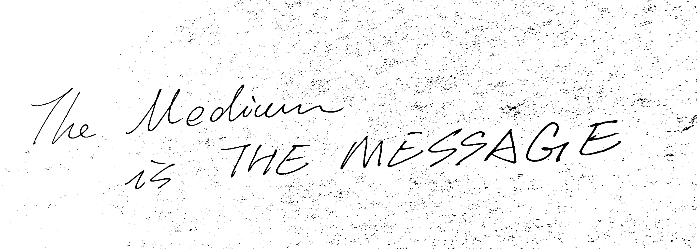

This is me trying to understand CSS.
This is the every first time that I try anything related to coding, as long as I can remember. I am still trying to understand the css, so the color, style, layout, etc, are all just done for the purose of making changes to see what changed. I acknowledge that the overall design may be disturbing.
Just for the purpose of changing. Just for the purpose of changing. Just for the purpose of changing. Just for the purpose of changing. Just for the purpose of changing. Just for the purpose of changing. Just for the purpose of changing. Just for the purpose of changing. Just for the purpose of changing. Just for the purpose of changing. Just for the purpose of changing. Just for the purpose of changing. Just for the purpose of changing. Just for the purpose of changing. Just for the purpose of changing. Just for the purpose of changing. Just for the purpose of changing. Just for the purpose of changing.
